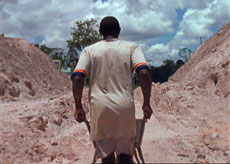

|
LET EACH ONE GO WHERE HE MAY
Ben Russell | USA/Suriname 2009 | 135 Min.
Material: 16mm
Format:16mm
Originalsprache: o. Dialoge
Kamera: Chris Fawcett, Ben Russell
Schnitt: Ben Russell
Ton: Ben Russell, Brigid McCaffrey, Paul Hill
Mit Benjen Pansa, Monie Pansa
Produktion: Ben Russell
Vertrieb: Ben Russell
Preis der FIPRESCI, International Film Festival Rotterdam2010, Großer Preis, Punto de Vista, Pamplona
www.dimeshow.com
www.magiclanterncinema.com
Ben Russells erster Langfilm ist ethnographisch, historisch, biographisch. Er knüpft an seine ethnologischen Kurzstudien TRYPPS (UNDERDOX 05) an, in denen er ekstatische und formale Momente zu experimentellen Filmpoemen verdichtete. Russell folgt mit seiner Kamera den zwei Saramaccaner Maroons Brüdern Monie und Benjen Pansa auf ihrer Reise durch den Dschungel, entlang eines Pfades, den einst die Sklaven in dem kleinen nördlichen Staat Südamerikas nahmen, als sie 1863 vor den Niederländern flohen.
Ausgangspunkt für den Film ist ihm ein Zitat von Lantifaya aus dem Jahr 1973: "This is how we’ve heard it: during slavery, there was hardly anything to eat. They would whip you until your ass was burning, then they would give you a bit of plain rice in a bowl. And the gods said, they said that this is no way for human beings to live. The gods would help them. 'Let each one go where he may.' So they ran."
Ben Russell, geb. 1976. Er studierte Kunst und Semiotik an der Brown University sowie Film und neue Medien am Art Institute of Chicago. Er arbeitet als Fotograf, Kurator und Experimentalfilmschaffender. Ben Russell lebt in Chicago.
Filme (Auswahl): 2008 Trypps #4, Tjúba Tén / The Wet Season | 2007 Peace Noise, Trypps #3 (UNDERDOX 05) | 2006 Trypps #2, Michoacan: La Muerte / El Traidor | 2005 Trypps #1, The Red and the Blue Gods, The Twenty-One Lives of Billy the Kid | 2004 The Ataraxians, Extra Terrestrial | 2002 The Breathers-In, Terra Incognita | 1998/2000 The Death of Abraham Lincoln (in Three Parts)
zurück
|